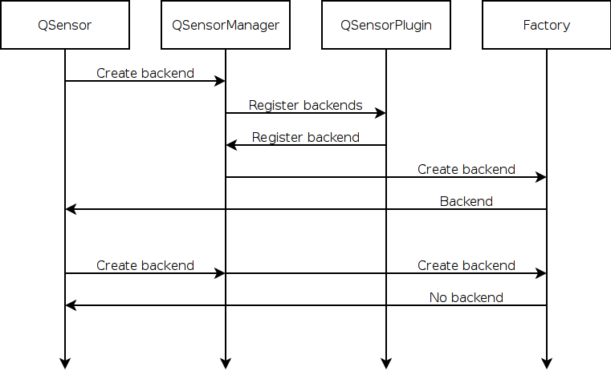
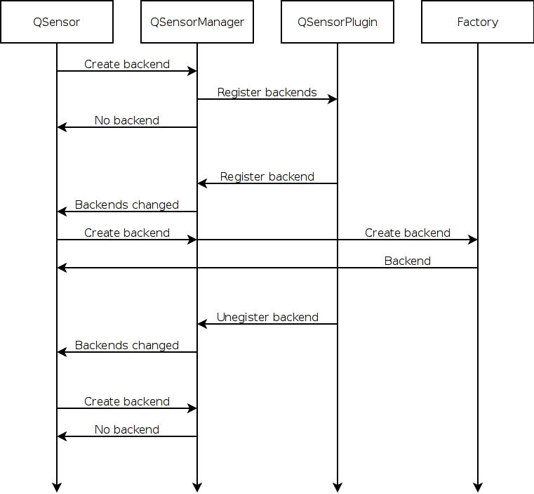

Sensor backends are generally registered statically. The registration happens when the sensors library is first used and the registration remains in effect while the program runs.

Statically registered backends may still exhibit some dynamic behaviour as the QSensorBackendFactory is free to return 0 to indicate that a backend cannot be created.
While static registration is fine for most backends there are some situations where this is problematic.
The clearest example is backends that represent non-fixed hardware. As an example, lets consider a game controller that is connected via Bluetooth. As there may be more than one game controller in range of the phone, the program wants to record that a specific game controller should be used. If the backend had been registered statically there would have been no unique information about the controller. Instead, the registration is delayed until the controller is seen.

A backend for fixed hardware should be registered immediately. Applications can see that the sensor can be used.
A backend for remote hardware should not be registered immediately. Applications can see that the sensor cannot be used. When the remote hardware becomes available the backend should be registered. Applications can see that the sensor is now available.
If it is necessary to return 0 from a factory for a backend that was registered, the backend should be unregistered. Applications can see that the sensor is no longer available. If the factory can create the backend again it should be registered. Applications can see that the sensor is available again.
When the underlying hardware is no longer available, the backend should be deregistered. Existing instances of the backend should report error states to the application but should handle the situation gracefully.